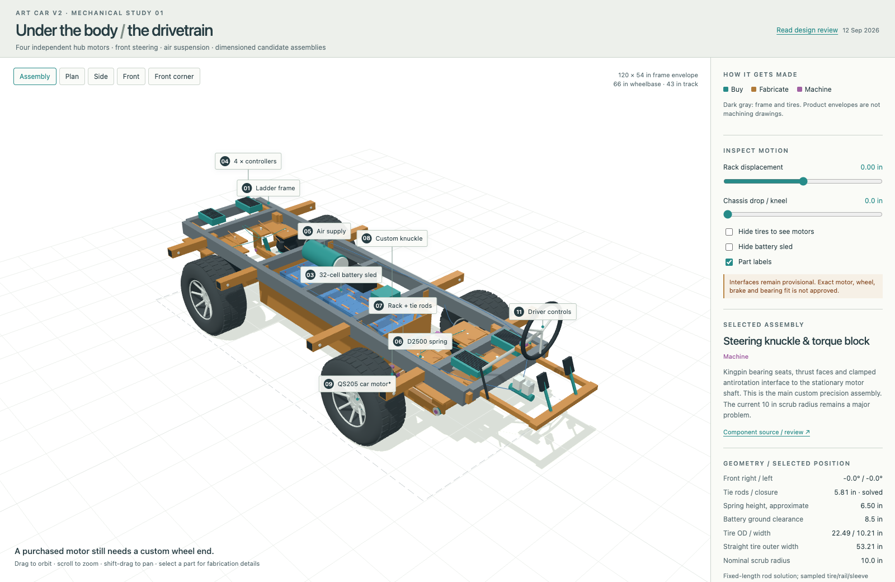

Plan of record · drivetrain · rev 13 September 2026
Drivetrain
A 54 × 120″ welded steel ladder frame with a bolt-on corner module at each end of each rail: a direct-drive hub motor in a trailing arm with an air spring and a damper above it. The front pair steer on inclined kingpins from a rack; hydraulic brakes on all four; the battery sled rolls under the middle and bolts up. The whole frame drops about 5.6″ on the airbags to kneel for boarding.

What has been decided
- Platform. A welded steel ladder: two 2 × 4″ side rails 24″ apart (14″ in from the 54″ envelope edge, so the tire chord clears them at full lock), cross members, and 2½ × 3½″ receiver sleeves welded through the rails at deck level to carry the pods. The roof posts land on the frame, never on the pods. decided
- Drive. Four independent 48 V hub motors, one per corner, traction and torque split by software; not skid steer. The candidate is the QS205 car variant (3 kW class, stationary shaft, rotating 4 × 100 flange) on a 12 × 8.5 rim with a Carlstar 23 × 10.50-12 turf tire, 22.5″ mounted. Direct drive because a 4,300 rpm motor would need ~50:1 of reduction to turn a 20″ wheel at 5 mph. direction — pending vendor drawing
- Wheel placement. Axles at ±33″ so the wheels sit under the side pods (wheelbase 66″), track 43″ hub to hub, tire outer faces at 53″ so the bare car fits the 57″ ramp. Each side pod's two receiver arms are 28″ apart and straddle the tire, which is what lets the frame kneel until the tire comes up into the space under the seat. decided
- Corner module. A 16″ trailing arm on a 10″-wide pivot with the motor's stationary shaft clamped in a torque block, an Air Lift Dominator D2500 (7″ bag, installed at ~6.25″) seated 10″ from the pivot for a 0.625 motion ratio, a separate damper, bump stop and droop strap. The front arm's two legs both sit inboard of the kingpin plane so the tire can sweep to lock; the rear is an L-arm beside the motor. Each corner comes off with one phase/hall connector, the air line, the brake hose, the damper, the torque-block clamp and (front) the tie-rod end. Carry one complete spare. direction
- Steering. Kingpins 8″ inboard of the hub centre plane — about the least a single-sided hub motor allows — inclined 12° so the axis meets the ground ~5.6″ inboard of the contact patch; 1¾″ pins. Steering arms point forward and outward; the rack sits on the frame at the ball joints' own station and height with fixed-length tie rods, so the model solves the actual wheel angles: 22° inner / 21° outer at ±2.5″ of rack travel (1.5° under ideal Ackermann), ~15.5 ft to the outside tire, 1.4° of toe change over ±3″ of travel. direction
- Suspension and kneel. Air springs for kneel, levelling on ruts and ride height for the ramp; never plumbed left/right together. As drawn the kneel is ~5.6″: the bag bottoms at 6.0″ of drop through the motion ratio, the tire chord meets the receiver sleeves at 5.6″ as the axle walks toward its pivot, the sled is 3″ off the ground at 6.5″. Wheel wells in the deck and pod floors with a 6″ fender box in the pod foot space make that possible; without wells it is ~1″. decided (wells) spring choice open
- Brakes. Regen fades at walking pace and does nothing on a full pack, so there is a real service brake: a pedal on a tandem master cylinder under the driver's floor, hydraulic to four calipers, working with a tripped BMS. The hand lever beside the shifter is a mechanically held parking brake, cable to two rear calipers. The DMV checks for both. decided sizing open
- Driver controls. One spring-return throttle pedal with regen on lift, the brake pedal beside it, a dead pedal for the left foot; a three-position F / N / R lever wired to the controllers' direction and enable lines (software refuses a direction change unless the car is stopped; neutral disables the controllers so the car can be pushed around camp). Steering column runs under the driver pod's floor with a quick-disconnect at the rail. Both drivers are left-handed and the driver sits on the left, so the shifter and hand brake are on the left console. decided
Key numbers
| Item | Value | Where it comes from |
|---|---|---|
| Frame | 54 × 120″ envelope; rails 2 × 4″ tube at ±12″; receivers 2½ × 3½″ through the rails, 28″ apart per side pod | frame-3d, README |
| Wheelbase / track | 66″ / 43″; tire faces at 53″ | frame-3d layout readout |
| Motor + wheel | QS205 car (50H V3), 3 kW class, 16 kg; 12 × 8.5 rim; Carlstar 23 × 10.50-12, 22.5 × 10.2″ mounted, 798 kg rated | notebook §3 |
| Speed | 5 mph = 84 rpm on 22.5″ tires; 10 mph is a capability, not an operating speed | BRC rules; notebook §1 |
| Torque per wheel, 12 seated (2,350 kg) | 49 / 99 / 165 N·m at Crr 0.03 / 0.06 / 0.10; +33 for a 2 % grade, +25 for 0.15 m/s² | notebook §3 scenario table |
| Air spring | D2500: 2.8–10.5″ height, design 5.5–7.5″, 2,096 lb listed; motion ratio 0.625 so bag force ≈ 1.6 × sprung corner load | Air Lift sheet; frame-3d |
| Kneel available | ~5.6″ (bag 6.0″, sleeves 5.6″, sled 6.5″, fender 7″); pod floors 24″ → ~18.4″ | frame-3d suspension readout |
| Steering | kingpin 8″ inboard, 12° inclination, 1¾″ pin; rack ±2.5″; 22° inner lock; ~15.5 ft outside-tire radius; toe change 1.4° over ±3″ | frame-3d steering readout |
| Kingpin bending | ~14,300 in·lb at a 1,350 lb corner with 600 lb of side load → 27 ksi | frame-3d |
| Car as drawn, no riders | ≈ 2,740 lb (frame 365, deck 55, sled 475, four corners 485, electrics 170, pods 860, roof 210, stairs 70, ottomans 50) | frame-3d weights readout |
| Corner loads | empty ~700; 12 seated ~1,325; 16 aboard ~1,525; 12 seated + 4 crowded at the rear ~1,830 (exceeds the D2500) | frame-3d load cases |
| Static roll threshold | ~0.56 g lateral with 12 seated; six on one side leaves ~570 lb on each inside wheel | frame-3d |
Models and drawings
- model/frame-3d.html — the whole chassis with articulated arms, the steering solver, kneel, load cases and the trailer stack. simple · advanced
- model/drivetrain-3d.html — the corners, knuckles, rack and sled as buy / fabricate / machine parts; rack and kneel motion; exploded front corner; torque and range calculators; OBJ export for Blender. simple · advanced
- model/drivetrain/ — saved diagrams (front corner, steering plan), the OBJ/MTL export, and
verify.cjs, which checks rod lengths, symmetry, toe, clashes and the kneel stops headlessly. README
{kind=link}
{kind=link}
Alternative under study: four identical corners

The benefit is a true universal spare and one repeated fabrication: corner identity becomes software, and four-wheel steering can provide countersteer, crab and spin modes. The costs are substantial: likely more weight and money, loss of the air-suspension kneel, a larger tire-sweep envelope, and a safety-critical steer-by-wire system. The identical modular-corner study records the proposed service boundary, vendor precedents, preliminary load and cost screens, steering modes, safety architecture and the physical test gate. It does not change the plan of record.
Open items
In the order they block the build:
- Vendor data for the QS205 car motor: the drawing and wheel-end load rating for the exact variant (QS's pages disagree on voltage range, PCD, IP rating and peak torque); continuous torque and winding temperature at 75–85 rpm; allowable stall time; a rim that matches CB60 / 4 × 100 without re-drilling. Nothing gets machined before this arrives.
- Spring choice for the crowded-rear corner load (D2600, or move the spring seat toward the axle) and the kneel that results.
- Brake sizing and a matched rotor/caliper set for the hub (rotor diameter, thickness, offset, PCD and pad sweep must match the motor); a rack with ~5″ of travel.
- Pivot and kingpin numbers in the models are moment-couple estimates for a first drawing, not bearing ratings; braking, drive torque and impact still need adding before bearings are chosen.
- Rolling resistance on the playa and motor efficiency at 84 rpm have never been measured. One night with a coulomb counter on the current car and a crane scale on a tow rope settles both.
- First physical prototype: one front corner plus a rack fixture, loaded to the corner reactions and cycled through travel and lock, before the chassis is frozen. Then the low-speed motor test.
How we got here
The chassis concept and corner module are sections 2 and 3 of the design notebook, which also has the honest low-speed torque discussion and why direct-drive hubs beat geared motors, AGV drive units and tractor motors. The 12 September drivetrain review found thirteen problems with the first version — mixed motor variants, an animated rather than solved steering linkage, an 8″ kneel that was really 5.6″, undercounted weights — and the response records what changed for each. The review also lays out the cheaper alternative, a rated utility-cart front axle and electric rear transaxle, which was not taken. The newer identical drive-steer-corner study revisits the industrial-module route specifically to test whether one universal spare and four-wheel steering justify its weight, cost and control burden. Earlier alternatives (used Leaf modules, ATV 20 × 10-10 tires, a 10″ scrub radius) are on the explorations page.